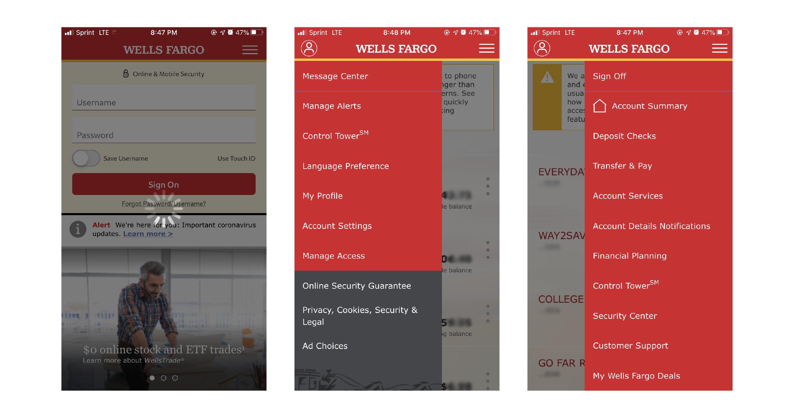
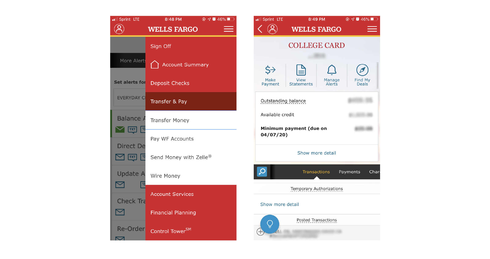
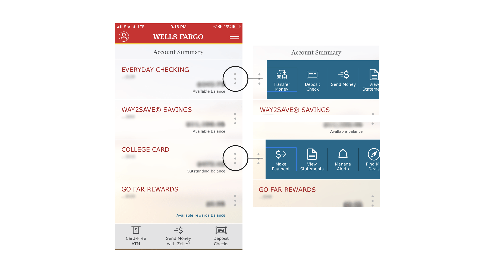
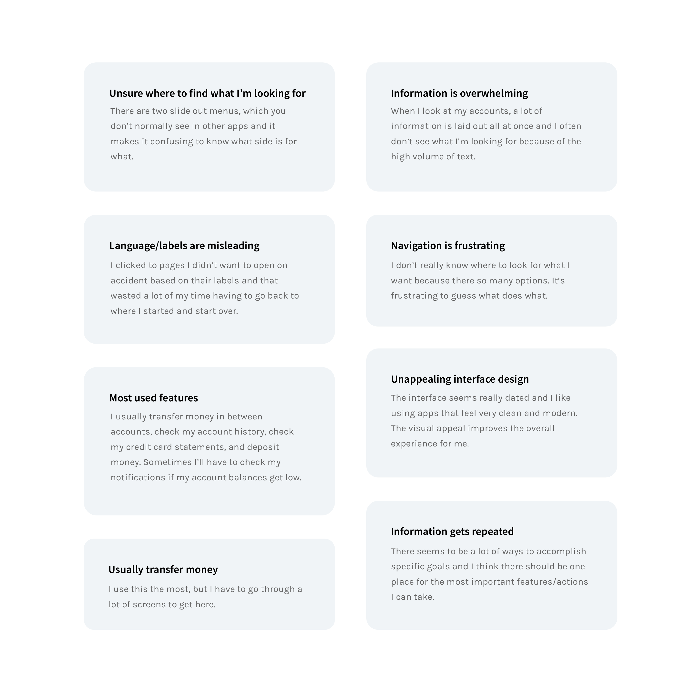

Project Elements
Duration üïê
January – February 2020 (1.5 months)
Tools ✒️
Figma, Adobe Illustrator
Team üôã‚Äç
Individual (Personal case study)
01. Project Overview
Background
Wells Fargo is an American, multinational financial services company that
provides banking, mortgage, investing, credit card, and personal, small
business, and commercial financial services. The Wells Fargo mobile app
allows clients to manage finances, make deposits, transfer funds, and pay bills.
Within this past year, Wells Fargo has taken the first steps to rebranding
themselves after recovering from their infamous bank scandal. They’ve slightly
updated their logo, featuring a more bold and modern red hue as well as a new
graphic design treatment for their wagon visual.
Current Mobile App Design



Objective
Despite this update in brand identity,
their mobile app has yet to be modernized. The current design is quite
dated in terms of interface and usability, making it complicated for users to
navigate through and quickly find what they need. The purpose of this redesign
is to simplify and streamline navigation of the app, focus its layout around the most
interaction-heavy features, and update the interface to increase user engagement.
02. User Research
User Interviews
I conducted interviews with a wide range of people, from college
students to working professionals. I wanted to identify the common pain
points users face when interacting with the Wells Fargo mobile app as well
as their own individual bank’s. To understand the needs and priorities of
my audience, I asked a series of questions while users interacted with the current app.
How would you describe your inital experience using this app?
What are you thinking while trying to navigate through it?
Which features do you find yourself using most frequently?
What are your thoughts on its layout and design?
What, if anything, caused you frustration?
How might you improve its design and usability?

After talking to users and understanding their experiences and needs, I was
able to solidify the most common obstacles they encounter and pinpoint the
features that were the most interaction-heavy.
Primary Concerns
Unclear Naming Conventions
Naming conventions are too broad, which is
confusing and tedious to navigate through
Users waste time jumping through many screens due to misleading naming conventions
Want to ease the language a bit more because banking jargon can be frustrating for new users
Cluttered Navigation
Not intuitive, too many ways to accomplish goals
Navigation feels cluttered, lacks solid structure and consistency
Outdated Interface
There are little to no visual cues that help direct users where to go
Heavily dependent on language for signals
Most Used Wells Fargo Features
Account Summary
Lays out all accounts on one screen
Transfer Money
Allows users to transfer money to and from accounts
Deposit Checks
Allows users to deposit checks remotely
Send Money with Zelle
Allows users to send money through Zelle, a feature that permits customers to send money directly between almost any U.S. bank accounts
Message Center
Allows users to check their inbox for messages and alert history
Manage Alerts
Allows users to choose what notifications they receive via email, text, or through the app
View Statements
Displays a list of all past billing statements
03. Ideation
Redefine Key Features
Based on the research I collected from the interviews, I've more clearly defined
the key features that I want to highlight in this redesign and that I believe are the most
significant to the function of the app. I've renamed some features to simplify the original
naming conventions.
Account Summary
I've chosen to keep this feature the same as it is functional and easy to locate
Transfer & Pay
The original Transfer Money feature had several different screens that accomplished the same goal of
transferring money from or making payments to the same Wells Fargo account, as well as allowing
customers to send money through Zelle
I've created one screen that accomplishes transferring money within Wells Fargo accounts and created a separate feature for sending money through Zelle
Deposit
I've chosen to keep this feature the same as it is functional and easy to locate, but I've simplified its name
Send
Allows users to send money through Zelle
This original feature was housed under the Transfer Money feature in the original app design and I've made it its own feature so users can find it more easily and don't have to parse through Transfer Money to get there
Alerts
I've combined the original Message Center and Manage Alerts features into one
Task Flow
I've determined which tools and criteria are the most essential and
created a task flow diagram to illustrate a more streamlined navigation across all processes within this app.

Sketches
With a more solidified idea of the redesign, I was able to explore potential screen layouts.
04. Prototyping
Wireframes
I took the key features and translated them into simple wireframes. I was mainly focused on
exploring different layouts that centralized the most interaction-heavy items, best
displayed the information to the user, and unified nagivation elements.
User Testing
In order to assess the new design’s friendliness and usability, I had 4 people from ages 20 to 55
test out these wireframes. I gave each individual the same set of tasks to accomplish and had each of
them walk through their user flow.
4 users
1 new user
2 frequent users
1 infrequent user
3 Tasks
1. Transfer money from your Savings to Checking account
2. Check to see if you have any notifications or messages
3. View your most recent credit card statement
User Testing Results
4/4 users were able to navigate to the Transfer & Pay screen and begin the transfer
4/4 users were able to check their notifications and noted that the yellow “alert” circle on the hamburger icon signaled how to get there
4/4 users were able to navigate to their credit card page and found the “View statements” button
After observing how each individual navigated through the design, I was able to note down minor, common areas of confusion and difficulty:
They also expressed that some subtext, for example, "Available Balance," was easily overlooked given its light font weight and size
4/4 users were able to check their notifications and noted that the yellow “alert” circle on the hamburger icon signaled how to get there
4/4 users were able to navigate to their credit card page and found the “View statements” button
After observing how each individual navigated through the design, I was able to note down minor, common areas of confusion and difficulty:
Small text size
When older users were examining the screen layouts, they noted that it was difficult to see the text clearly, especially
in areas with multiple lines of text
They also expressed that some subtext, for example, "Available Balance," was easily overlooked given its light font weight and size
Small icon size
Similar to the small text size, 3/4 users noted that the icon sizes might be too small and could be increased for better visibility
Need for a "help" button
2/4 users expressed that it might be helpful to have a "help" button somewhere convenient, especially for long-time users who
are used to the old design and are trying to get acclamated to the updated version
High-Fidelty Prototype
After discussing with the same people I interviewed and receiving feedback, I was able to create more structured and effective layouts of the simple wireframes.
I also concentrated on implementing the Wells Fargo color palette in a purposeful and consistent way that aligned with the new brand identity.
One of the most important features I wanted to include in this redesign was the static navigation bar at the bottom of the screen. It houses
all of the most interaction-heavy features so that it can be found quickly and conveniently. As for the left slide out menu, it combines the information found in
the original double slide out menus. I wanted to ensure that information is grouped effectively in this redesign so that like items can be found in a single place.
The redesign of the Checking and Credit Card accounts focus on displaying the most essential information to ease to the user into the page and avoid overwhelming them.
The redesign of the Checking and Credit Card accounts focus on displaying the most essential information to ease to the user into the page and avoid overwhelming them.
05. Reflection
Lessons & Takeaways
Throughout the course of this project, I most enjoyed user interviews and implementing better systems that addressed their concerns.
I learned that I actually like a bit of complexity as it allows me to search for connections and relationships within systems
and out in the real world. This helped develop my own understanding of people and how to meet their needs that they didn't even
know they had.
In the future, I would like to try to conduct user research that extends beyond my immediate network to gain more insight on users' concerns. I would also like to have iterated a bit more and done more user testing to validate this redesign. The next steps for this project would be to design further into the other navigation features like Deposit and Send to get a more holistic view of the functions of this app.
In the future, I would like to try to conduct user research that extends beyond my immediate network to gain more insight on users' concerns. I would also like to have iterated a bit more and done more user testing to validate this redesign. The next steps for this project would be to design further into the other navigation features like Deposit and Send to get a more holistic view of the functions of this app.